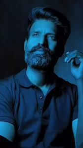

Overview
Cast
 |
 |
 | ||
| RAJINIKANTH | NAYANTHARA | MEENA | PRAKASH RAJ | SOORI |
Trailers
Music
The music for the film will be composed by D. Imman, collaborating with actor Rajinikanth for the first time, and featured lyrics written by Thamarai, Viveka, Yugabharathi, Arun Bharathi, Mani Amuthavan and Arivu. Veteran singer S. P. Balasubrahmanyam, had recorded an introduction song for Rajinikanth in the film, which marks his last song before his death on 25 September 2020. In an interview with Sudhir Srinivasan of The New Indian Express, Imman said that "Fans expect certain factors from Rajinikanth's songs. On the other hand, I want the album to carry my identity as well. I have to cater to both. In addition to that, Rajini sir is acting in a full-fledged rural entertainer after a while. So, the Annatthe album should justify all these aspects". He said that the opening track, sung by SPB was considered to be the "best-ever opening song" for Rajinikanth.
Apart from SPB, other singers who crooned the songs from the music album were Sid Sriram, Shreya Ghoshal, Anirudh Ravichander, Diwakar and the composer Imman himself. The soundtrack was reported to feature about five songs and a theme music; totally six tracks in the soundtrack album, and has varied genres — opening song, melody, dance and festive numbers. Sun Pictures had planned to withhold the audio rights, along with the satellite and digital rights of the film and had planned to release the entire soundtrack through the company's music label Sun Audio.